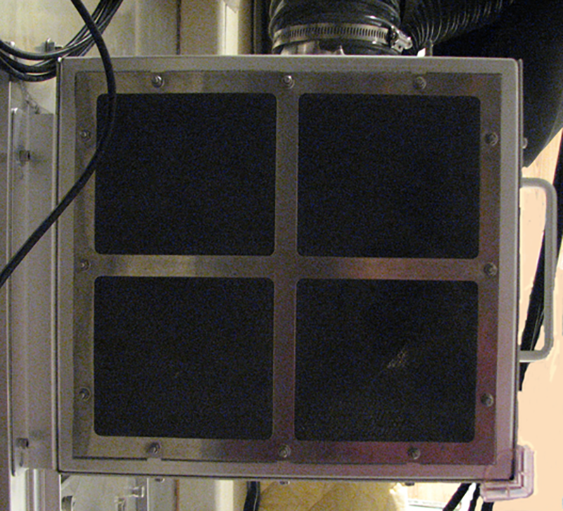

- 00000018WIA3072C630GYZ
- id_20116304.0
- Jul 19, 2019 2:54:57 PM
Removing the blower box filter
Procedure
Use a non-ferrous 7 mm wrench to remove the 12 nuts holding the filter in place.
Figure 1. Blower box filter - patient air side
